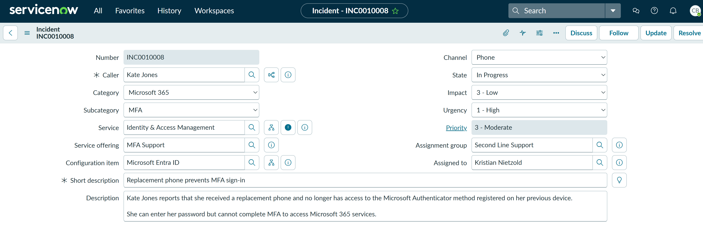
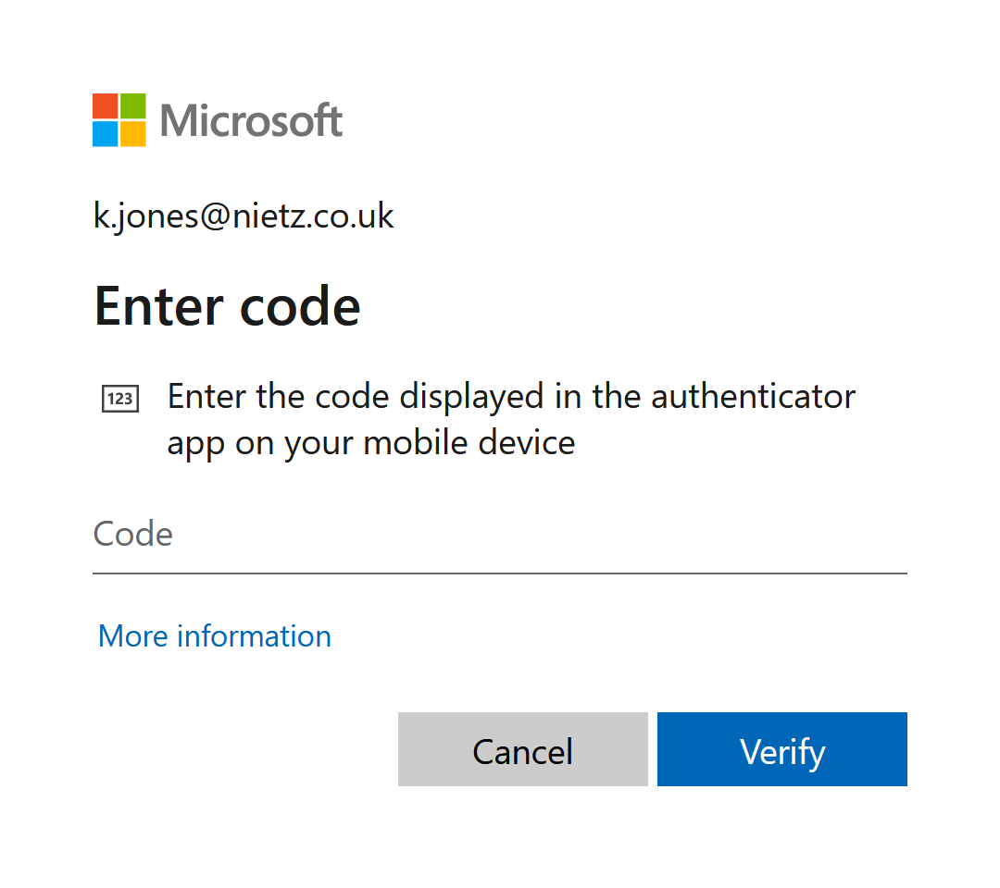
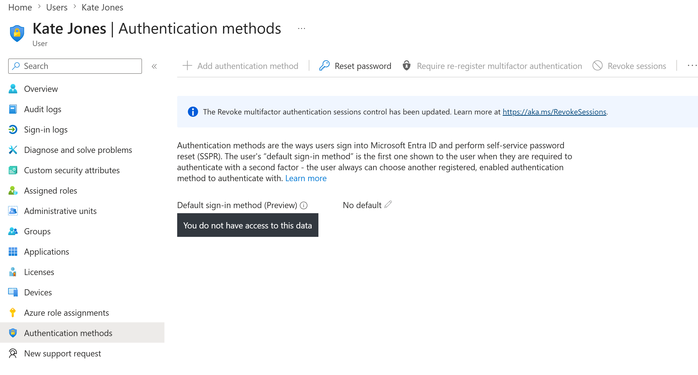
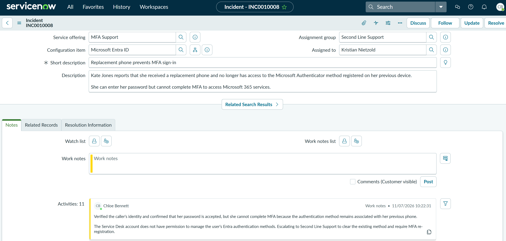
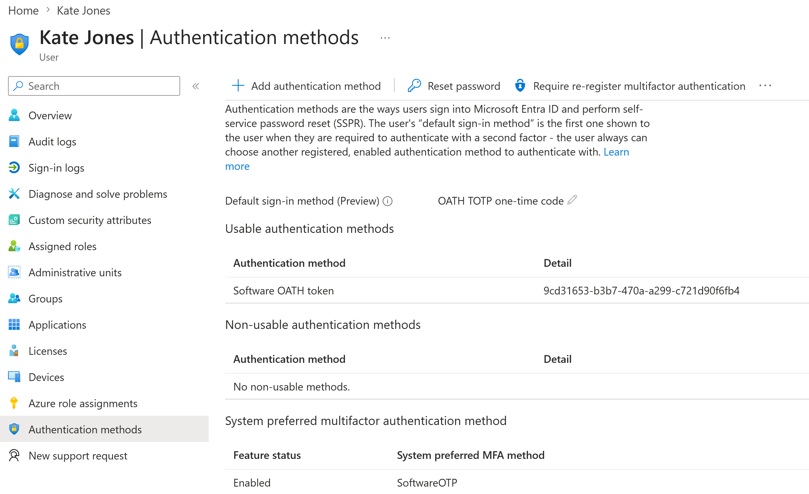
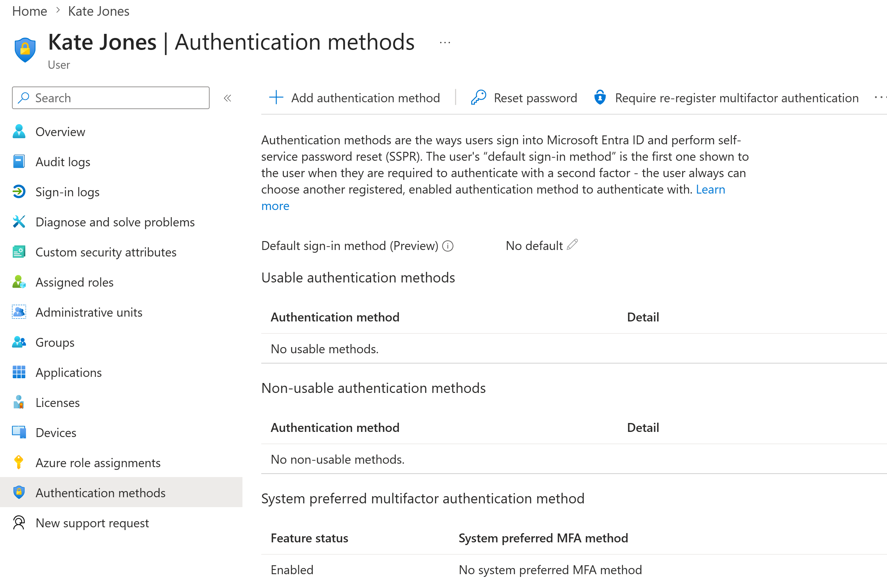
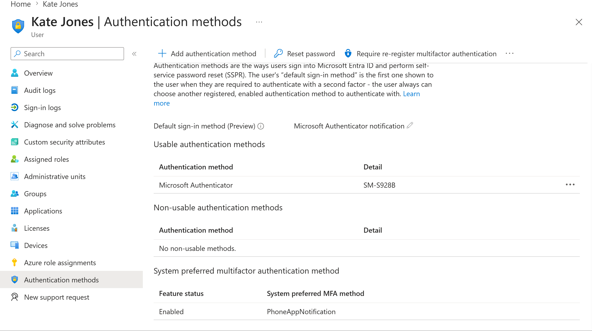
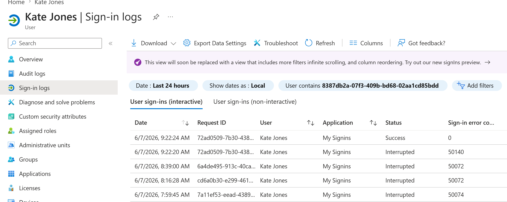
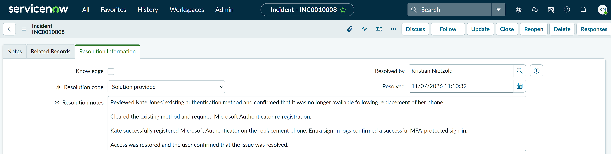

TS-002: Replacement phone prevents MFA sign-in
Restored Microsoft 365 access after a replacement phone left the user unable to satisfy MFA. First-line triage established the permission boundary, the authentication-method change was escalated under least privilege, and access was validated after Microsoft Authenticator re-registration through Entra sign-in logs.
Scenario
Kate Jones contacted the Service Desk after receiving a replacement phone. Her password was accepted, but sign-in required an authenticator-app code from the previous device, preventing access to Microsoft 365. The incident was treated as a single-user MFA issue with low impact but high urgency.
ServiceNow Ticket

Investigation
Signing in as Kate reproduced the issue: Microsoft 365 requested a code from an authenticator app. This confirmed that the password was accepted and that the failure occurred at the MFA stage.

The Service Desk account could reach Kate's Entra authentication-methods page but could not view or manage the underlying methods. This established a clear permission boundary and justified escalation instead of granting broader identity-administration permissions to first line.


Chloe documented the identity check, the successful password stage and the authentication-method permission limitation. The ticket was then reassigned to Second Line Support for the privileged MFA action.
Fix Applied
Second Line reviewed Kate's authentication methods and identified an existing Software OATH token with an OATH TOTP code as the default sign-in method. This matched the code challenge reproduced during investigation.


The old method was cleared and MFA re-registration was required. Entra then showed no usable authentication methods, confirming that the previous registration was no longer available for sign-in.
Kate registered Microsoft Authenticator on the replacement phone. Entra showed Microsoft Authenticator as a usable notification method and as the default sign-in method.

Validation
Entra sign-in logs showed earlier interrupted attempts followed by a successful interactive sign-in with sign-in error code 0. This provided administrative evidence that access had been restored.

Resolution
The incident was resolved by Kristian Nietzold using the code Solution provided. The resolution notes recorded removal of the previous method, Microsoft Authenticator re-registration, successful sign-in-log validation and user confirmation that access was restored.

Summary
- I classified a P3 Moderate incident using the correct category, service, service offering and configuration item.
- I reproduced the MFA code challenge and confirmed that the user's password was accepted.
- I demonstrated least-privilege troubleshooting by escalating when the Service Desk account could not manage Entra authentication methods.
- I documented the escalation in ServiceNow and transferred ownership to Second Line Support.
- I identified and cleared the obsolete software OATH method, then required MFA re-registration.
- I registered Microsoft Authenticator on the replacement phone and validated the result using Entra sign-in logs.
- I resolved the incident with a clear resolution code and clear resolution notes.